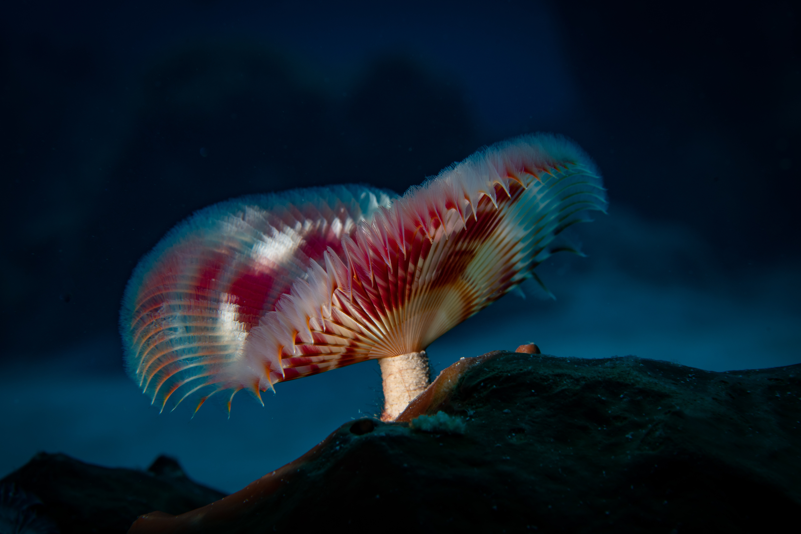

Grace Bay Beach

Grace Bay Beach is one of the most famous areas in the Turks and Caicos, known for its powdery white sand and crystal-clear turquoise water. Located on the island of Providenciales, it stretches over three miles and offers calm, shallow waters that are perfect for swimming, paddleboarding, and relaxing. The beach is surrounded by luxury resorts, restaurants, and water sports providers, making it both peaceful and full of things to do. Its beauty and tranquility make Grace Bay Beach a must-visit spot for anyone traveling to Turks and Caicos.
Long Bay Beach

Long Bay Beach in Providenciales is a peaceful and less crowded spot known for its calm, shallow waters and soft sandy shores. It’s especially popular with kiteboarders because of the steady winds that blow across the bay. Visitors love Long Bay for its relaxing atmosphere, beautiful views, and opportunities for water sports and beach walks. It’s a perfect place to unwind away from the busier beaches
Coral Gardens

Sure! Here’s a brief paragraph about the coral reefs in Turks and Caicos:
---
The coral reefs in Turks and Caicos are vibrant underwater ecosystems teeming with colorful marine life, making them a top destination for snorkeling and scuba diving. These reefs provide a natural habitat for tropical fish, sea turtles, and stunning coral formations. Exploring the reefs offers visitors a chance to experience the island’s rich biodiversity and crystal-clear waters up close. Protecting these reefs is vital to preserving the beauty and health of the marine environment.
Conch Farm
The Conch Farm in Turks and Caicos is the world’s only farm dedicated to breeding and conserving the queen conch, a key part of the island’s culture and cuisine. Visitors can take educational tours to learn about the life cycle of conchs and the importance of protecting this marine species. It’s a unique and fascinating attraction for anyone interested in marine life and local traditions.